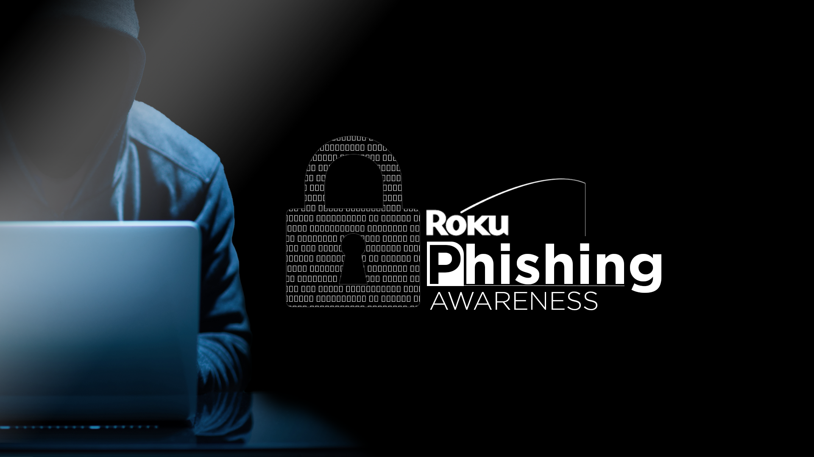
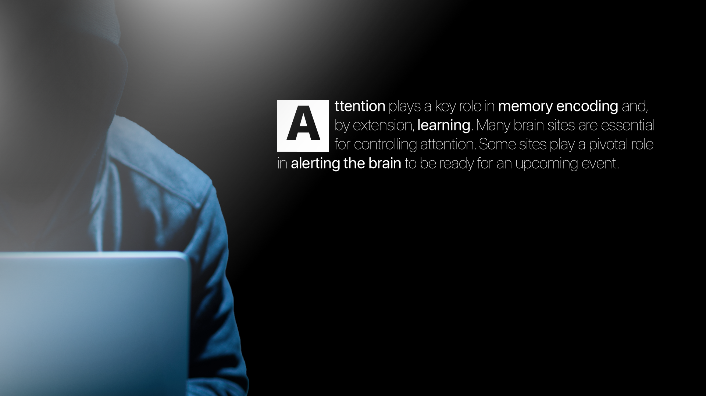
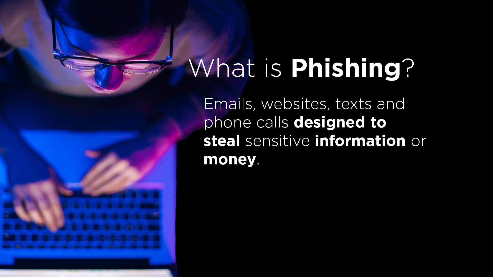
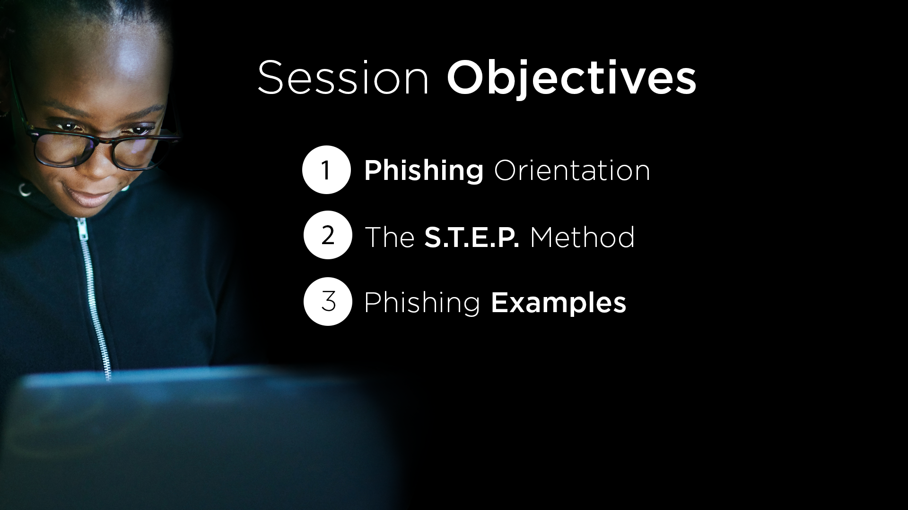
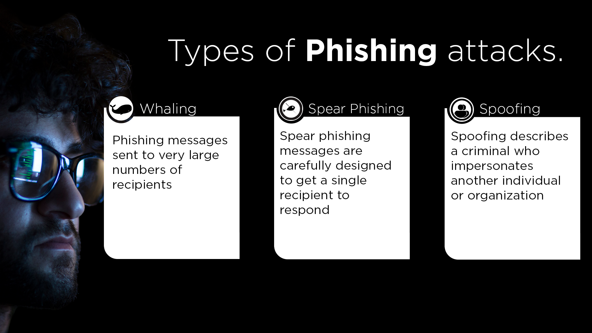
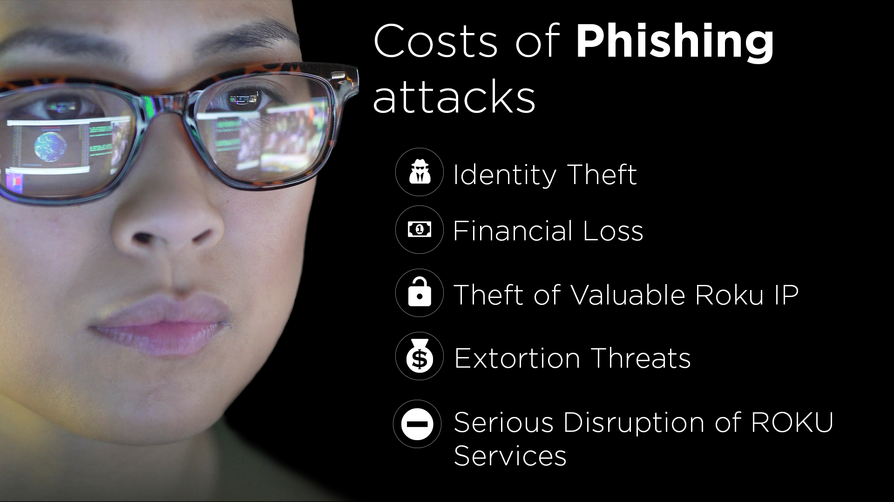
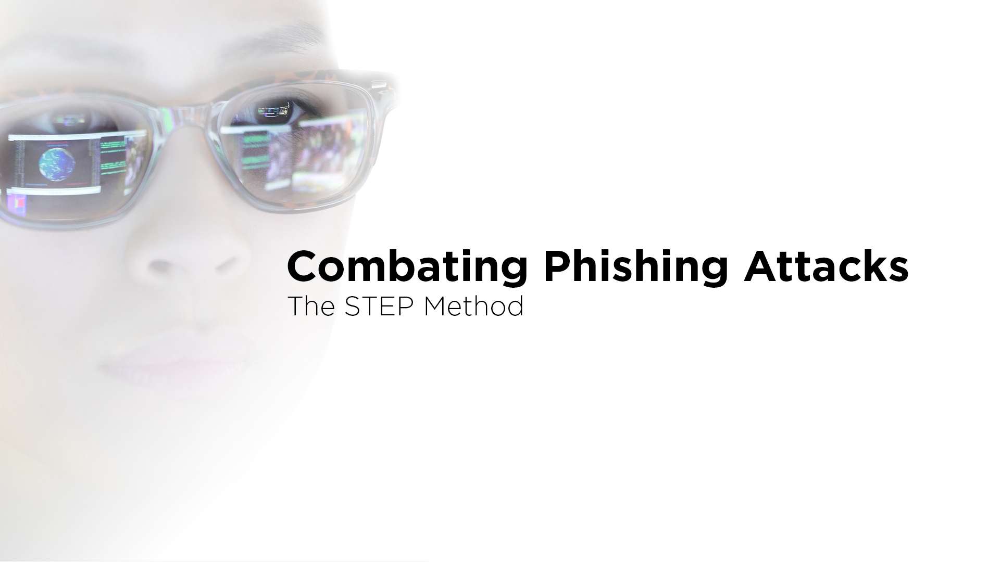
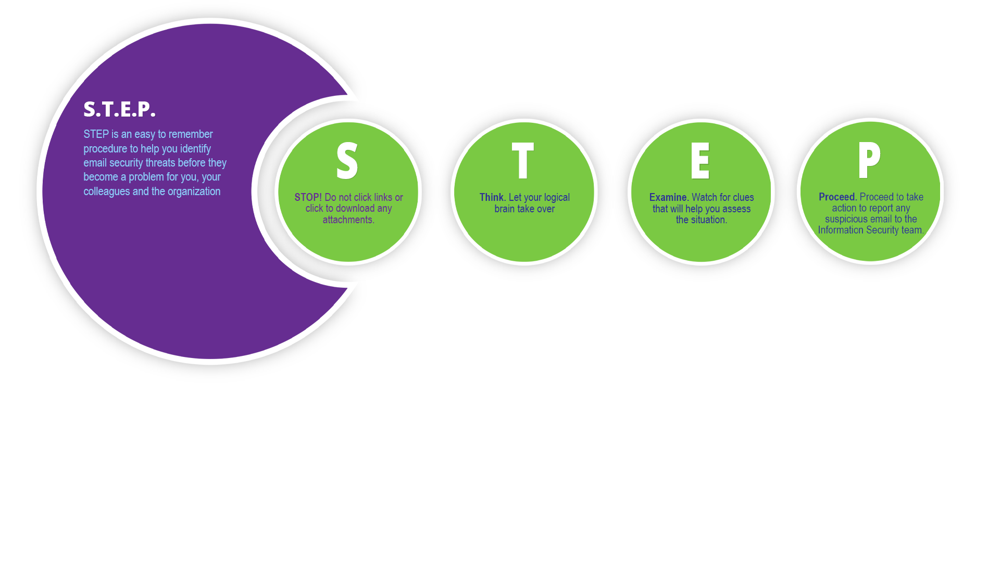

At Roku, I partnered with Cybersecurity subject matter experts to design and deliver an enterprise phishing awareness program that strengthened employees' ability to recognize, report, and respond to increasingly sophisticated phishing and social engineering attacks.
Rather than relying on traditional awareness training, the program focused on building everyday security habits through practical scenarios, real-world examples, and clear guidance that employees could immediately apply in their work. The initiative combined instructional strategy, visual communication, multimedia production, and behavior-centered learning to reinforce vigilance, encourage reporting, and foster a stronger culture of shared security responsibility across the organization.
The examples below represent a selection of the videos, graphics, and learning assets developed as part of Roku's broader cybersecurity awareness and behavior change program.








Related Case Study
Cybersecurity Behavior Change
Security training needed to move beyond passive awareness toward employee vigilance and reporting behavior.